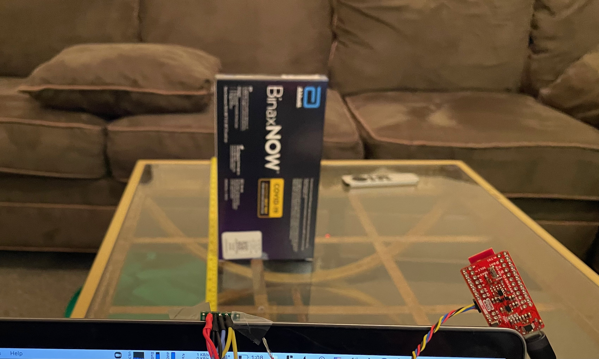
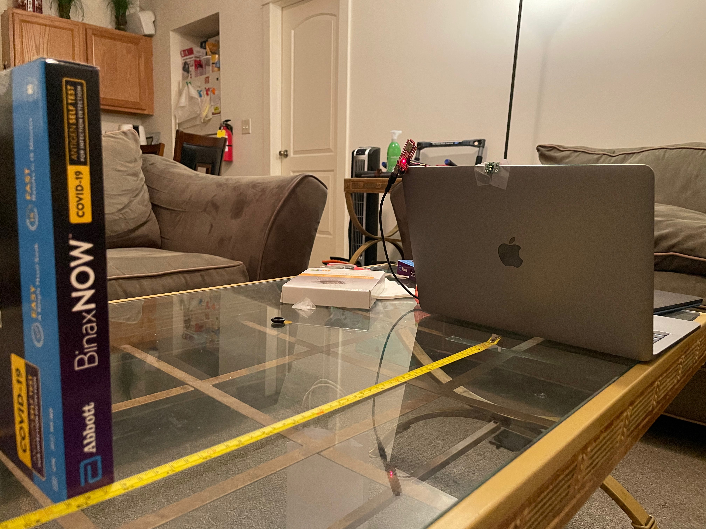
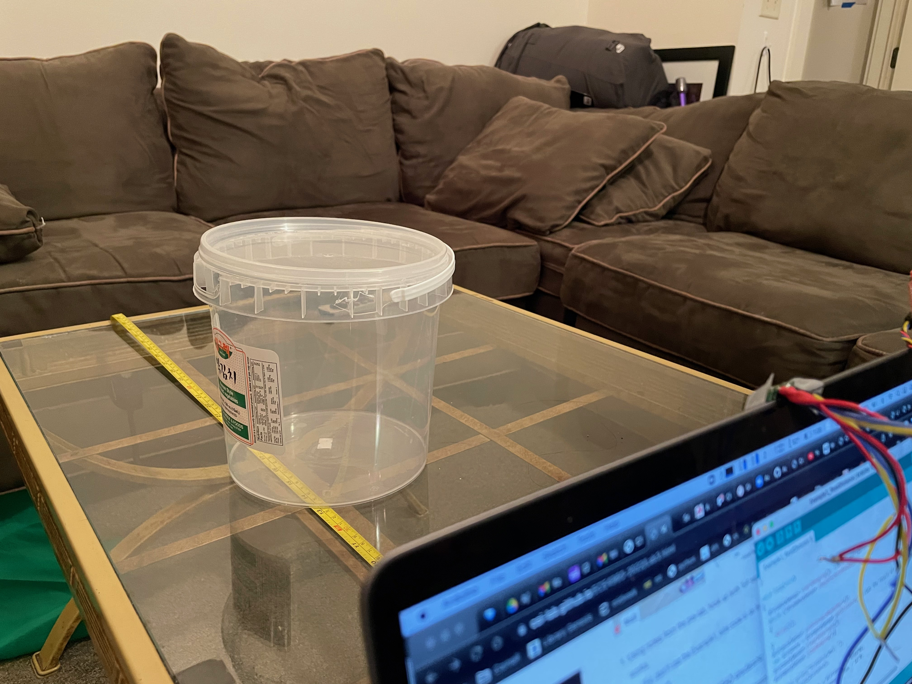

In this lab, we connect two time of flight sensors as well as an IMU sensor to our artemis board to retrieve values that we can use in our robot.
The first thing we had to do is to setup one time of flight sensor to the Artemis board so that the communication between the two devices can be recognized. After installing the required libraries (SparkFun VL53L1X 4m laser distance sensor library), we connect the first TOF sensor the our board using the QWIC connector, and also leave another wire to allow for daisy chaining.
Now that the sensor is physically connected, we can test its connection via software. By running Example05_Wire_I2C, we can print out the address of our sensor. An intersting thing to note is that the address printed out is actually not the one documented in the datasheet. This can be explained by the fact that the address in the datasheet, 0X52, is an 8 bit address, while the address read by our artemis is a 7-bit address.
There are three modes available for the TOF sensor as stated in the datasheet: short, medium, and long. We are also given two measurements for the max distance that the sensor can read, one in a dark environment and one in a bright environment. If an environment is dark, it is best to use the long mode as it provides the greatest range, but if an environment is bright, the short mode is preferred. For our robot, the short mode is also preferred because it will most likely be in a closed, bright environment.
We start off connecting only one tof sensor. Using this single one, we were able to determine the distance of objects directly in front of the sensor. The sensor's distance mode was set to short, so the readings we got were pretty accurate to the actual distances measured by a measuring tape. Below, you can see three images showing the setup of testing a single tof sensor.
  Then we moved onto testing both time of flight sensors. Because the sensors themselves are identical, we need way to distinguish the two tof sensors. We do this by taking advantage of the shutdown pin on one of the sensors. During startup, we enable the shutdown for sensor 1, change the address for sensor 2, then reeanble sensor 1 so that now we can clearly identify the two sensors. By modifying the example code to include a second tof sensor, we can see that it works well, having two different values being shown for each individual sensor.